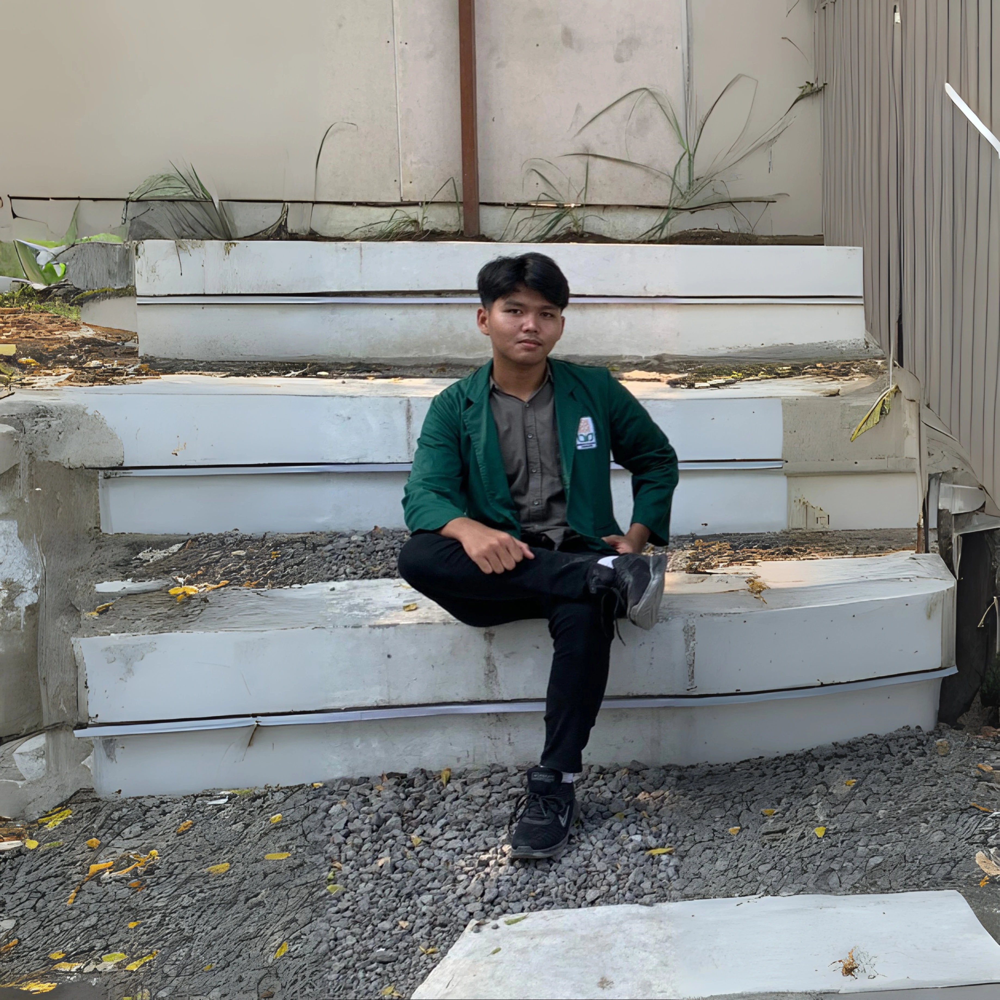

Membangun dan Menjaga Sistem Digital
Saya adalah mahasiswa Teknik Informatika di UIN Sunan Kalijaga yang memiliki minat mendalam pada infrastruktur teknologi. Bagi saya, tantangan tidak hanya terletak pada pembuatan kode, tetapi juga pada bagaimana kode itu berjalan, terhubung, dan aman dalam sebuah sistem yang solid. Saya menikmati proses membangun fondasi digital yang andal dan aman dari gangguan.
Keahlian Saya
Bahasa Pemrograman
- C++
- Python
- SQL
Networking & Sistem
- Mikrotik
- Linux Server
- Cyber Security
Keahlian Lainnya
- Pemecahan Masalah
- Manajemen Proyek
- Berpikir Kritis